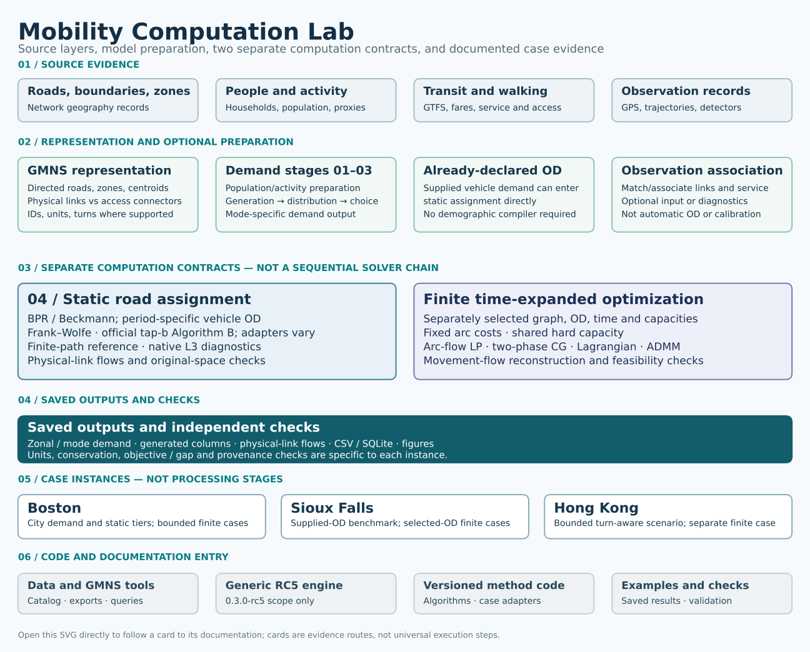

Architecture
City modelling is the organizing workflow
Mobility Computation Lab centres on networks, zones, demand, evidence and network computation. Data catalogs support this workflow; they do not replace a city model. The city workflow distinguishes currently executable components from extensions.

Four source groups, model preparation, two independent mathematical contracts, outputs, three case instances and reusable software/documentation entry points. Clickable SVG · PNG · Module model · Source and renderer hashes.


The figure is a selective module map, not a claim that one executable runs every row. It does not make the cases downstream of the outputs. Its observation card represents QC and matching/association with physical links or service records—not an automatic GPS → observed OD → calibrated model route. City demand stages 01–03 and already-declared vehicle OD are distinct entries to static stage 04; bounded finite time expansion has its own selected graph, OD, time and capacity contract. Static BPR/Beckmann and finite fixed-cost hard-capacity optimization are not sequential solver steps. The capability table gives exact city and method scope.
The earlier R2 diagram remains available as a historical presentation, but the selective R3 map above is the current architecture view.

Retained earlier framework illustration

This earlier conceptual illustration remains available as a distinct historical presentation; it is not a substitute for the complete, source-grounded module map above.
Network, zone-access and demand interface
app/src/gmns_dynamic/external_network_input.pyreads the current explicit model profile.app/cases/contains self-contained synthetic regression inputs, not new city datasets.schemas/and data contract document IDs, field mappings, units and model conditions.
The generic engine starts with prepared network and demand tables. Boston and Hong Kong also have separately documented, case-specific source, zone, demand and observation workflows; their results do not turn registry names into model-ready cities or make those steps automatic in the generic CLI.
Assignment and optimization
app/src/gmns_dynamic/explicit_network_workflow.pyprepares the explicit space–time problem.app/src/gmns_dynamic/run_full_cg_v1.pyretains the Phase-I/Phase-II column-generation engine.tools/mnl.pyis the network command entry point.algorithms/static_fw/is a separate static Beckmann / Frank–Wolfe implementation.
Do not compare these models as if a shared CSV vocabulary made their objectives, capacities or time definitions identical. Official tap-b Algorithm B integration and bounded Lagrangian/ADMM results have their own documented method scopes; native internal Policy Bush state inspection remains a research extension. The retained tools/mnl.py entry is the generic 0.3.0-rc5 engine, not an automatic reproduction route for later separately versioned Boston and Hong Kong CG cases.
Supporting mobility data
src/mobilitylab/omdv/ contains selected authorized city/catalog normalization and exact name/country matching functions. src/mobilitylab/data/catalog_city_workflow.py and tools/mcl_data.py call them on user-supplied local files. This is independent of the fixed aggregate evidence catalog.
catalog/open-data-evidence.json, omdv-provenance.json, omdv-authorized-files.json and interoperability-sources.json preserve summaries, sources and reuse scope. The OMDV study does not supply city OD or GPS observations to the solver automatically.
Results and visible verification
launcher/ verifies saved outputs. catalog/datasets.json and benchmark-results.csv identify bundled examples and historical benchmark records. The visual gallery indexes the retained scientific figure families and their source records; data cards preserve interpretation limits. Original-space flow reconstruction, saved-result SQLite/CSV queries and model-specific independent checks are distinct output routes, not a single universal optimality certificate.
Maintain the working implementation
The existing numerical and data-tool source layouts remain unchanged. The GitHub README and Pages homepage are different presentations of the same project; both must preserve the city-network focus and lead to real tools and figures. tools/build_site.py is the Pages generator, not a replacement for root README.md.
Source-grounded module index
The linked table is generated from the R3 module model and its referenced source ledger. It includes every drawn module, its actual public source/data entry, the documentation route, and the scope qualifier. A source path is evidence of an implementation or data record, not proof that every city uses it.